No resources match that search.

Premier professional networking platform. Essential for cloud security job search, networking, and building your personal brand.

Dice
Tech-focused job board with extensive cybersecurity listings. Advanced filters, salary data, and market insights for tech professionals.

CyberSeek
Interactive career pathways and workforce data for cybersecurity professionals. Maps career progression and shows demand by location.

ClearanceJobs
Specialized job board for security-cleared professionals. Essential for government and defense contractor positions.

CyberSecJobs
Cybersecurity-exclusive job board with strong federal and defense contractor presence. Focuses on cleared positions.

CyberSN
Cybersecurity-exclusive platform with curated listings from entry-level to CISO roles. Free posting and candidate matching tools.

CareersinCyber
Strong in GRC, audit, and compliance roles. Ideal for policy-focused cybersecurity positions in financial services.

Glassdoor
Job search with company reviews, salary transparency, and interview insights. Research companies before applying.

Indeed
Largest job board with extensive filters and volume. Swiss Army knife of job search for all experience levels.

USAJOBS
Official US government job board. Essential for federal cybersecurity positions with NSA, CIA, FBI, DHS, and other agencies.

Hack The Box Careers
Job board for companies hiring HTB users. Your HTB rank and reputation can be more valuable than a resume line.

Scale.jobs
AI-powered job application platform with ATS-friendly resume tools and human support for cybersecurity professionals.

Wiz Cloud Security Jobs Board
Cloud security job board from Wiz featuring roles in cloud security, DevOps, and infrastructure security from leading companies.

Resume Worded
Free resume analyzer and optimization tool. Instant feedback on ATS compatibility and suggestions for improvement.

VisualCV
Professional resume builder with ATS-friendly templates. Track who views your resume and optimize for keywords.

Wozber
Free ATS-friendly resume builder with ATS resume scanner. Optimize your cybersecurity resume for applicant tracking systems.

Enhancv
Modern resume builder with industry-specific templates. Includes cybersecurity analyst examples and ATS optimization.
Toptal Resume Review
Expert guide to tech resumes in 2025. ATS trends, formatting tips, and keyword optimization for technical roles.

Resumatic
ATS-optimized resume templates for multiple tech roles including cybersecurity, with free options available.

Teal HQ LinkedIn Guides
Comprehensive LinkedIn optimization guides for cybersecurity roles. Headlines, summaries, and profile tips for 2025.

National Cybersecurity Alliance - Resume & LinkedIn Guide
Expert tips from technical recruiters on writing compelling resumes and attention-getting LinkedIn profiles.

LinkedIn Mentorship Program
Structured mentorship program including CoachIn for women in tech. Career guidance, skill development, and networking.
Cyber Potential
Cybersecurity career coaching including LinkedIn optimization, job search strategy, and interview preparation.

OffSec Talent Finder
Connect with cybersecurity employers looking for OffSec-certified professionals. Visibility for OSCP, OSWA, OSEP holders.

r/cybersecurity
Active Reddit community for cybersecurity professionals. Career advice, job leads, and informal mentorship.

r/netsec
Network security subreddit with experienced professionals. Technical discussions and career guidance.

Programs.com - Cybersecurity Job Guide 2025
Honest guide to getting cybersecurity jobs in 2025. AI impact, practical experience, and entry-level strategies.

DestCert - Cybersecurity Job Demand 2025
Analysis of cybersecurity job market trends, demand by industry, and career outlook through 2030.

Global Cybersecurity Network Blog
Career articles including job search strategies, resume tips, and showcasing skills effectively.

Cybersecurity Guide - Job Resources
Comprehensive roadmap for finding cybersecurity jobs. Company websites, agencies, internships, and networking tips.

HackerOne
Leading bug bounty platform. Build verifiable portfolio, earn recognition, and gain practical security experience.

Bugcrowd
Crowdsourced security platform. Find vulnerabilities, build reputation, and create public portfolio.

Synack
Vetted bug bounty platform with higher-quality targets. Requires application but offers better opportunities.

Black Hat
Premier cybersecurity conference. Networking, job fair, and connections with potential employers and mentors.

DEF CON
World's largest hacker conference. Networking, CTFs, and connecting with security community and employers.

RSA Conference
Major cybersecurity conference with extensive job opportunities, networking, and vendor connections.

BSides Security
Community-driven security conferences worldwide. Accessible networking and mentorship opportunities at all levels.

OWASP Local Chapters
Local OWASP chapter meetings worldwide. Free networking, learning, and connecting with local security professionals.

NICCS - NICE Framework
National Initiative for Cybersecurity Careers and Studies. NICE framework, career pathways, and workforce development.

(ISC)² Career Development
Career resources from (ISC)² including job board, salary guide, and professional development tools.

Cybrary Career Paths
Guided career paths for cybersecurity roles. Skills roadmaps from entry-level to advanced positions.

SANS Career Development
Career resources from SANS including job board, salary survey, and cybersecurity careers site.

Levels.fyi
Tech salary transparency. Compare compensation packages for security roles at major tech companies.

PayScale
Salary data and compensation research for cybersecurity positions. Free salary reports and negotiation tools.

Salary.com
Comprehensive salary information for cybersecurity roles. Job descriptions, salary ranges, and career advice.

GitHub
Essential for showcasing security projects, scripts, and contributions. Your technical portfolio and proof of work.

Medium
Publish cybersecurity articles and build thought leadership. Share writeups, tutorials, and security research.

DEV Community
Developer community for sharing security tutorials and projects. Build reputation and connect with tech community.

Toptal
Elite freelance network for top 3% of cybersecurity consultants. High-paying contract opportunities.

Upwork
Freelance platform with cybersecurity consulting opportunities. Build reputation and client base.

Fiverr
Freelance marketplace for security services. Pentesting, security audits, and consulting gigs.

DayCyberwox YouTube
Career advice and day-in-the-life content for cybersecurity professionals. Real-world insights and tips.

Wellfound (formerly AngelList Talent)
Startup job board with strong security startup representation. Recruiters reach out directly with salary and equity ranges upfront.

Y Combinator - Work at a Startup
Job listings from active YC portfolio companies including many security startups. Apply to multiple at once; founders often reply directly.

Built In
City-organized tech job board with detailed company profiles. Strong filtering for cybersecurity and remote roles plus editorial content on target employers.

MentorCruise
Paid long-term mentorship with security pros - CISOs, principal engineers, and bug bounty experts. Structured coaching, resume reviews, and mock interviews.

InfoSec-Conferences.com
Global directory of cybersecurity conferences, hackathons, and CFPs. Searchable by date, location, and topic - track major events and regional BSides alike.

Welcome to the Jungle (formerly Otta)
Curated tech job platform with rich company profiles covering culture, stack, and benefits. Smart filtering for cloud and security roles across Europe and the US.

PowerToFly
Diversity-focused career platform for women and underrepresented tech professionals. Job board plus virtual career fairs, technical chats, and mentorship events.

Hired
Reverse-marketplace tech hiring - companies reach out with upfront salary, equity, and role details. Strong coverage of cloud and security engineering positions.
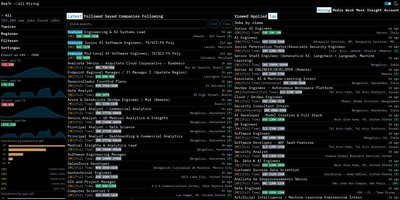
InfoSec Jobs
Cybersecurity-only job aggregator with strong filters for remote, security domain, seniority, and salary. No premium tiers - the infosec equivalent of Indeed.

We Work Remotely
One of the largest remote-only job boards (run by 37signals). DevOps and engineering categories carry steady cloud security listings - exposed via RSS for easy alerts.

NinjaJobs
Volunteer-run infosec job board where every employer is vouched for by an industry council. Smaller volume than aggregators but higher signal-to-noise.
Hired
Reverse-recruiting marketplace where companies apply to candidates with the role, salary, and equity disclosed upfront. Active in tech and security.

Hacker News "Who Is Hiring"
Monthly Hacker News hiring thread where tech and YC companies post roles directly. Often the first place startup security jobs surface.

Tech Ladies
Community and job board for women and non-binary technologists. Vetted listings from partner companies, often in cloud and security.

CyberCorps Scholarship for Service
NSF-funded scholarship covering tuition and a stipend in exchange for federal cyber service after graduation. A direct path into roles at CISA, NSA, and DOD components.

r/SecurityCareerAdvice
Subreddit focused on cybersecurity career questions - resume reviews, role transitions, cert ROI, salary negotiation. Higher signal than r/cybersecurity for career topics.

HackerRank
Coding-interview practice used by hiring teams for technical screens, with a Security track covering OWASP web flaws, crypto, and SQL injection. Free for candidates.

ClearedJobs.Net
Job board for U.S. security-cleared professionals, with cleared-only cloud, SOC, and IR roles. Filter by Secret, TS, or TS/SCI with poly.

interviewing.io
Mock technical interviews with engineers from top companies, including a security track. Anonymous practice rounds are free.

Remote.co Developer Jobs
Curated remote-only board with developer and security listings. Vetted to filter out hybrid roles dressed up as remote.

The Muse
Career platform pairing job listings with company culture profiles and employee interviews. Useful for vetting fit before applying.

ZipRecruiter
US-focused aggregator with AI-driven matching and strong long-tail coverage of regional security, MSSP, and government contractor roles.

Honeypot
Europe-focused developer job platform where companies apply to you. Salaries and visa sponsorship listed up front.
VetSec
Non-profit community supporting US military veterans entering cybersecurity. Curated job board, mentorship, study groups, and CTF training.
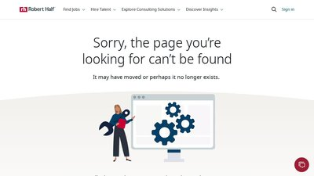
Robert Half Cybersecurity
Long-established staffing firm with a dedicated cybersecurity practice covering contract-to-hire and full-time security engineering, GRC, and cloud roles.
NoFluffJobs
European IT job board with mandatory salary ranges on every posting. Strong coverage of security and cloud roles across Central and Eastern Europe.
WiCyS Job Board
Women in Cybersecurity job board with cloud, AppSec, SOC, and GRC roles from partner employers. Free to browse; membership adds resume reviews and virtual career fairs.
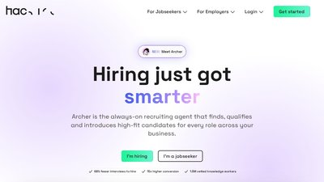
Hackajob
UK-headquartered reverse marketplace where vetted tech and security employers apply to candidates with salaries disclosed upfront. Strong UK/EU and growing US coverage.
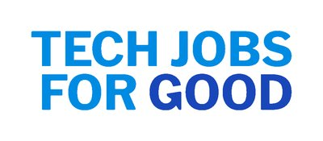
Tech Jobs for Good
Mission-driven job board for tech and security roles at nonprofits, social-impact startups, government, and civic tech organizations across the US and Canada.
RemoteOK
Large remote-only tech job board with security, DevOps, and cloud filters. Salary ranges and time zones surfaced on every listing.
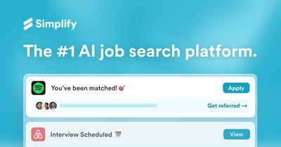
Simplify Jobs
Aggregated tech and security job feed with an autofill browser extension for one-click applications across multiple ATS platforms.
Blind
Anonymous professional community with active security and cloud channels covering interviews, comp negotiation, and employer signals. A complement to Levels.fyi.
infosec-jobs.com
Cybersecurity-focused job board with global and remote listings, open salary data, and filters for cloud and appsec roles.
Hired
Reverse-marketplace platform where employers send interview requests with upfront salary info to vetted tech and security candidates.
Handshake
Early-career job platform connecting students and new grads with internships and entry-level cybersecurity and cloud roles.
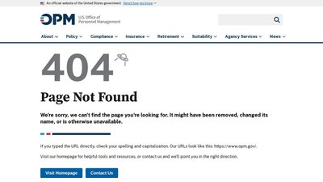
CyberCareers.gov
Official US government portal for federal cybersecurity jobs, hiring paths, and skills-based assessments.
Remotive
Curated remote job board with software and cybersecurity listings vetted for genuinely remote roles.
Comparably
Company-culture and salary research site with employee-reported ratings to help you vet employers and negotiate offers.
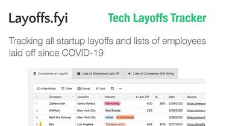
Layoffs.fyi
Tech and startup layoff tracker for gauging hiring conditions and researching companies before you apply.
Jobscan
Optimizes your resume against a job description for applicant tracking systems, with match scoring and keyword suggestions.
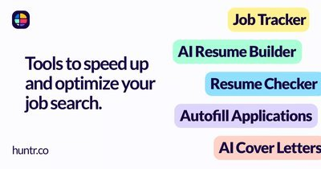
Huntr
Job-application tracker with a pipeline board, resume tailoring, and autofill to keep a busy search organized.
Hired
Reverse-marketplace hiring platform where vetted tech companies send interview requests with salary and equity up front.
Key Values
Company-discovery tool that matches engineers with teams by culture and values rather than job title.
Exponent
Interview-prep platform with courses, question banks, and peer mock interviews for system design and behavioral rounds.
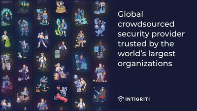
Intigriti
European bug bounty platform where researchers earn payouts and build a public profile - practical experience and a portfolio for employers.
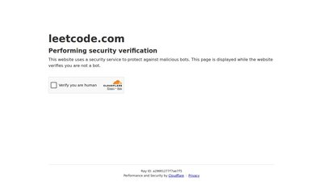
LeetCode
The standard coding-interview practice platform - thousands of problems and company-tagged sets to prepare for technical screens.
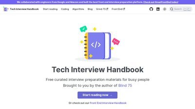
Tech Interview Handbook
Free, open-source guide to the whole technical interview process - coding patterns, system design, behavioral prep, resume tips, and negotiation.
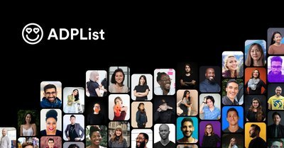
ADPList
Free mentorship platform with thousands of volunteer mentors offering 1:1 sessions - career guidance, resume reviews, and mock interviews.
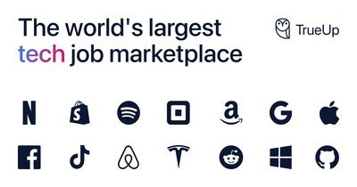
TrueUp
Tech job marketplace aggregating roles at big tech and startups, paired with a layoff tracker and hiring-trend data. Free to browse.

FlexJobs
Subscription job board of hand-screened remote and flexible roles, with steady remote cloud, DevOps, and security engineering listings.
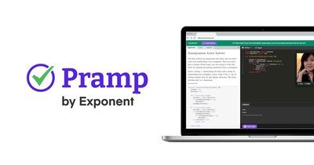
Pramp
Free peer-to-peer mock interviews where you alternate as interviewer and candidate across coding and system-design rounds.
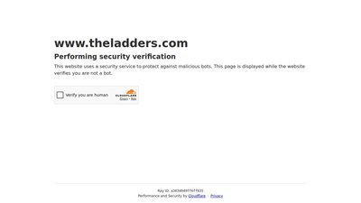
The Ladders
Job board curated for senior and higher-compensation roles, including cloud and security engineering and leadership positions.
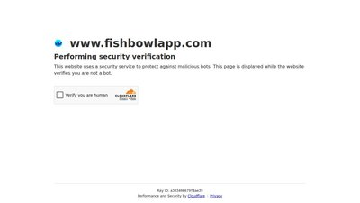
Fishbowl
Anonymous professional community with cybersecurity and IT groups for candid talk on pay, interviews, and employer reputation. Complements Blind.
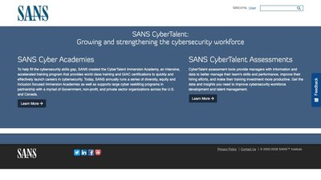
SANS CyberTalent
SANS aptitude and skills assessments paired with a hiring pipeline connecting vetted candidates to security employers.
CISA Careers
Official careers portal for CISA, the U.S. cyber-defense agency, with federal cloud security and incident response roles.
O*NET OnLine - Information Security Analysts
U.S. Department of Labor occupational profile for security analysts - tasks, skills, tools, and salary and outlook data.
Intelligence Careers (IC)
Official U.S. Intelligence Community careers portal with cleared cyber and cloud security roles across federal agencies.

BLS Occupational Outlook - Information Security Analysts
U.S. government profile for security analysts with authoritative pay, growth, and job-outlook data updated annually.

Monster
Long-running general job board with broad technology and cybersecurity listings, resume tools, and salary research.
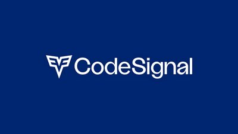
CodeSignal
Technical assessment platform with practice for the coding screens many employers use in hiring.
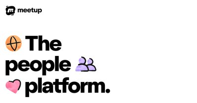
Meetup
Find local and virtual security, cloud, and DevOps meetups to build your network and hear about openings.
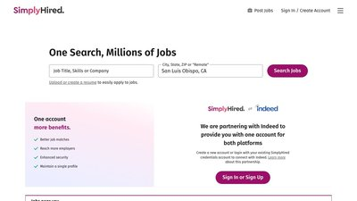
SimplyHired
Job-search aggregator pulling cloud and cybersecurity listings from thousands of boards, with salary estimates and reviews.

fwd:cloudsec
Non-profit, practitioner-run cloud security conference, with talks posted free online.
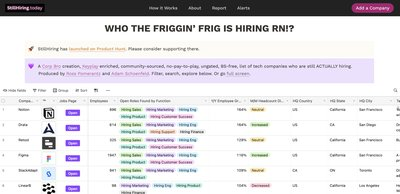
Who's Still Hiring?
Community-sourced, ungated list of tech companies that are actually hiring right now.